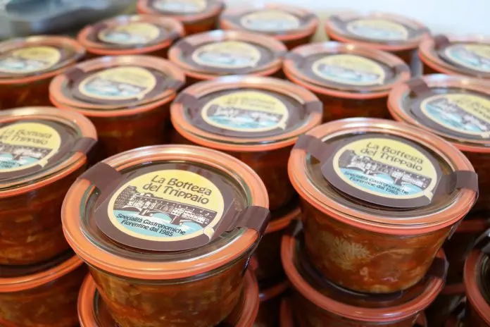
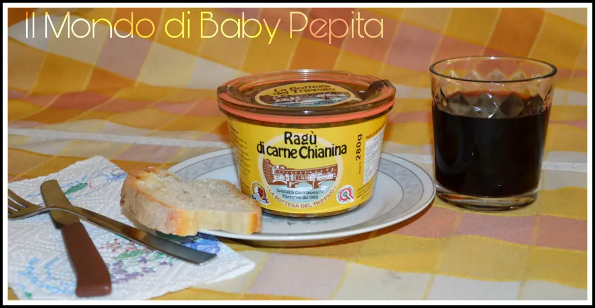
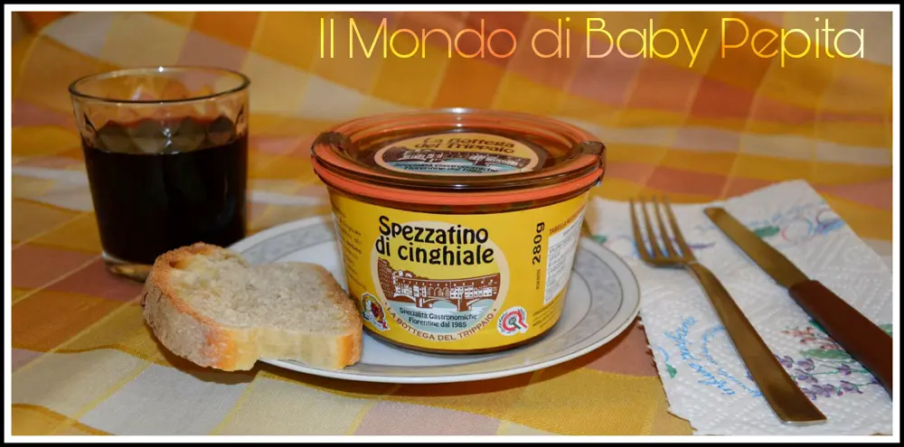

Azienda "La Bottega del Trippaio"

Frama s.r.l. è un’azienda nata nel 1985 a Scandicci, vicino a Firenze, dalla voglia di mettersi in gioco di Franco e Marco Falli, due fratelli che, sulle orme del padre, decidono di prendere in gestione un’attività di lavorazione di zampe bovine.
L’azienda pian piano si espande, specializzandosi anche nella cottura di lingue, stomaci bovini, nervetti e guance ed infine nella produzione di piatti pronti, ispirati allespecialità tipiche fiorentine.

Dalla trippa al lampredotto in zimino, dalla ribollita allo stracotto di guancia, ed è così, quindi che nasce la linea "La Bottega del Trippaio", che confeziona in vasetti di vetro i piatti della cucina locale, a partire da ingredienti selezionati. Le specialità gastronomiche della Bottega del Trippaio sono fatte per essere conservate nel tempo grazie al processo di sterilizzazione ma basta scaldarle per poterle portate in tavola ed assaporarne il gusto genuino e autenticamente toscano.
L'azienda è stata così gentile da farmi provare i propri prodotti tipici tradizionali, facendomi scegliere tra la vasta gamma di vasetti di zuppe. Ho così scelto 2 specialità:
- Ragù di carne chianina
- Spezzatino di cinghiale
RAGU' DI CARNE CHIANINA:
Arriverà un vasetto di vetro ermetico di 280 gr.
Ragù di carne bovina razza chianina certificata e di carne suina in un preparato di sugo di verdure, confezionato in un vasetto di vetro, sterilizzato in autoclave.
Prodotto gastronomico. Ingredienti: carne bovina razza chianina 30%, carne suina 15%, cipolla rossa, carota, sedano, olio extravergine di oliva, vino rosso (contiene solfiti), sale, buccia di limone, pepe nero in polvere, noce moscata.

MODALITA' DI UTILIZZO:
Scaldare in forno a microonde fino all'ebollizione, oppure versare il prodotto in un tegame e scaldare a fuoco lento.
Per aprire il vasetto, tirare la linguetta della guarnizione del coperchio. Prezzo: 6,90 €
SPEZZATINO DI CINGHIALE:
Anche questo arriverà in un vasetto di vetro ermeticamente chiuso di 280 gr.
Polpa di cinghiale preparata in un sugo di verdure e pomodoro, confezionata in un vasetto di vetro, sterilizzata in autoclave senza utilizzo di conservanti.
Prodotto gastronomico sterilizzato. Ingredienti: polpa di cinghiale 75%, polpa di pomodoro, olio extravergine di oliva, sedano, carota, cipolla, vino bianco (contiene solfiti), doppio concentrato di pomodoro, sale, pepe nero.
MODALITA' DI UTILIZZO:

Scaldare in forno a microonde fino all'ebollizione, oppure versare il prodotto in un tegame e scaldare a fuoco lento. Per aprire il vasetto, tirare la linguetta della guarnizione del coperchio. Prezzo: 6,80 €
Ho provato questi sughi pronti e sono davvero unici ed inimitabili oltre ad essere genuini e prodotti del tutto italiani.
Per acquistare dal loro store online cliccate QUI
Il loro FACEBOOK invece è: LA BOTTEGA DEL TRIPPAIO FB